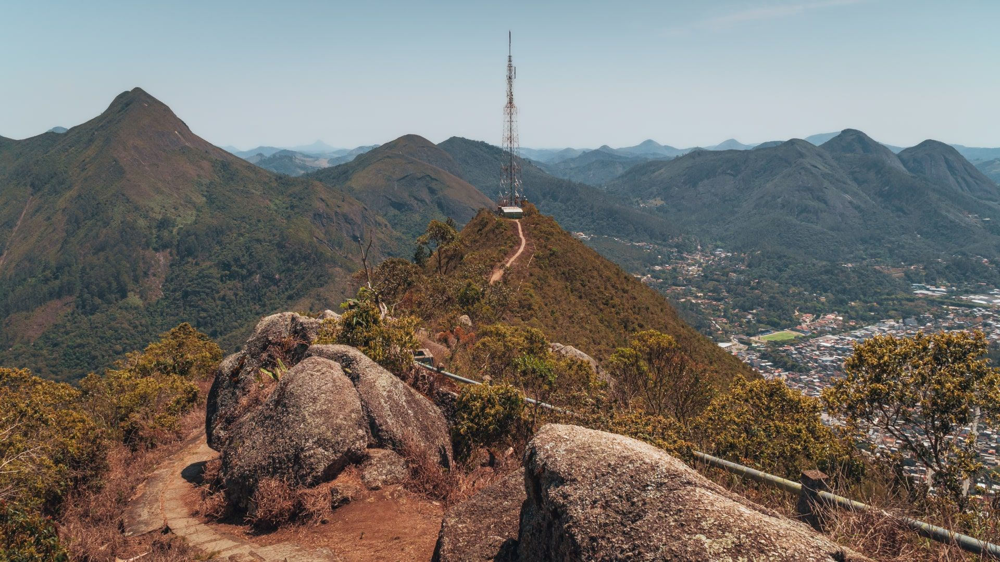
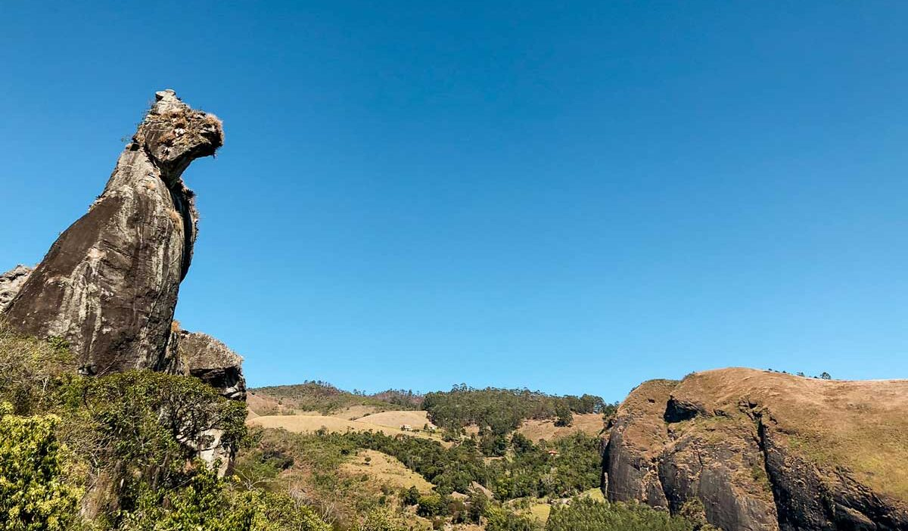
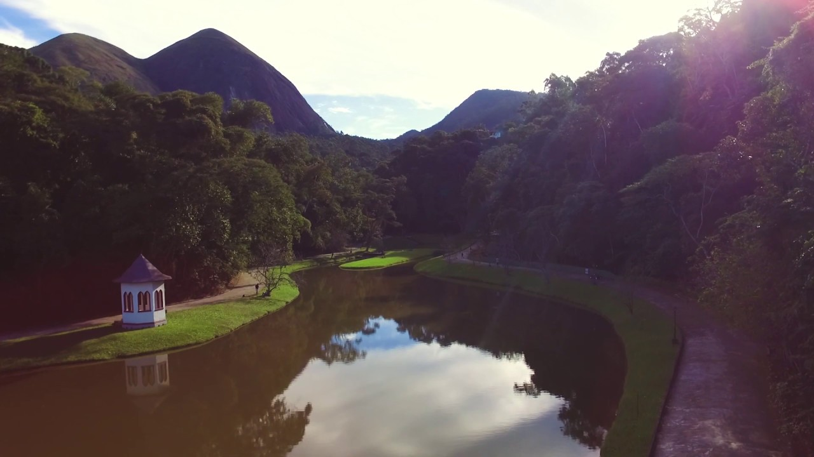
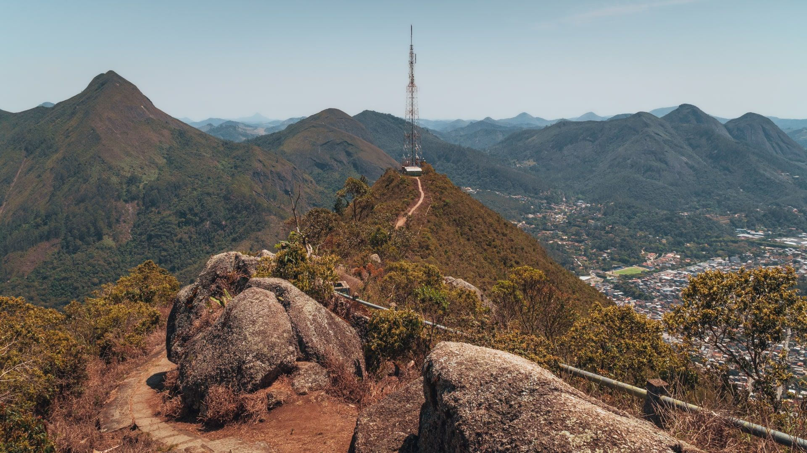
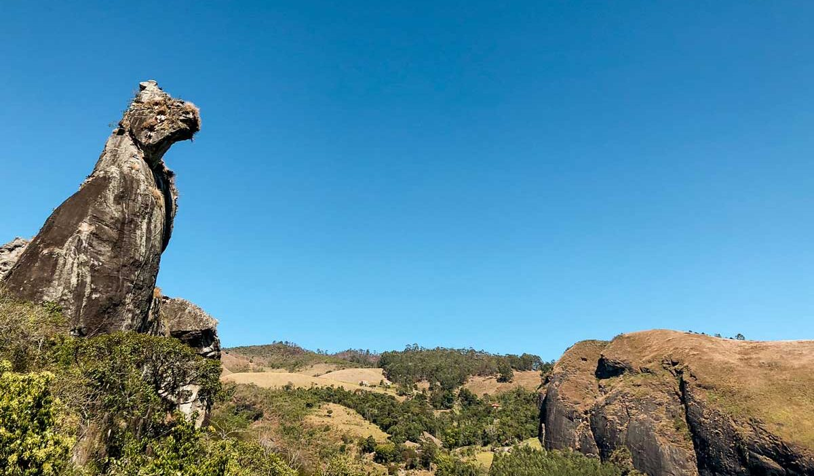
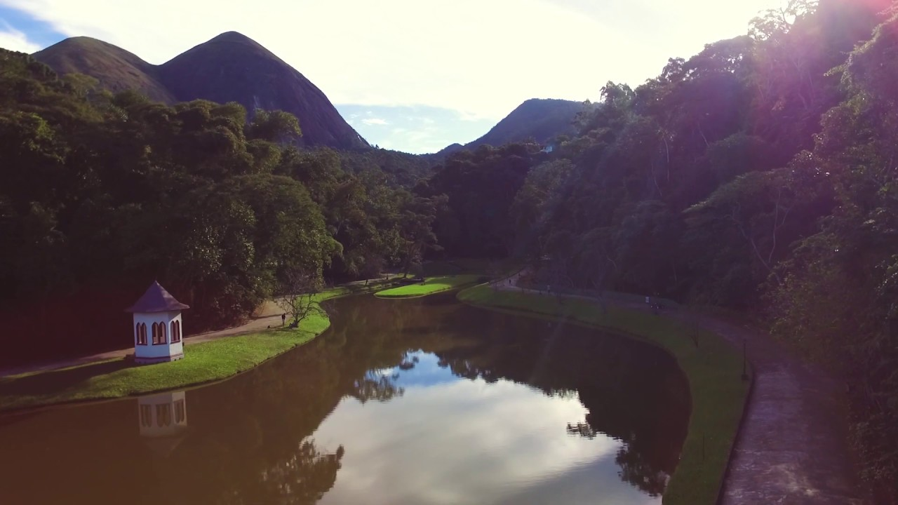
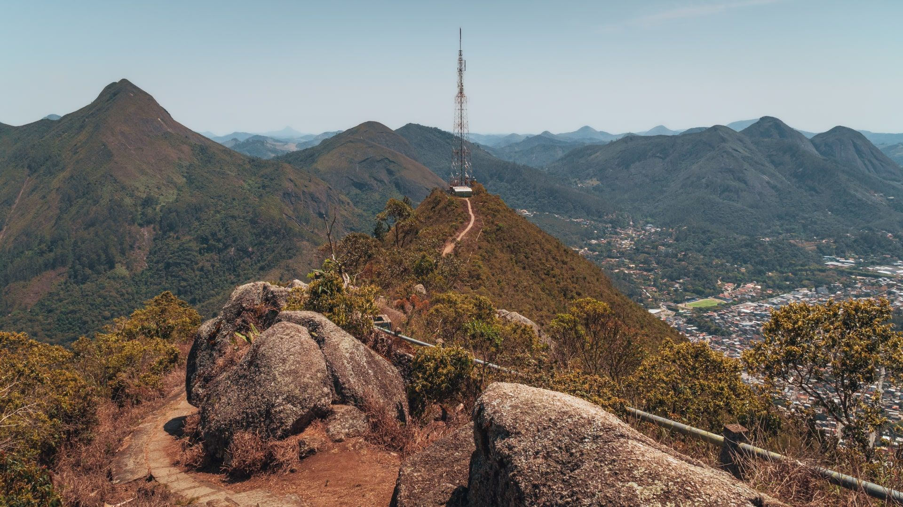
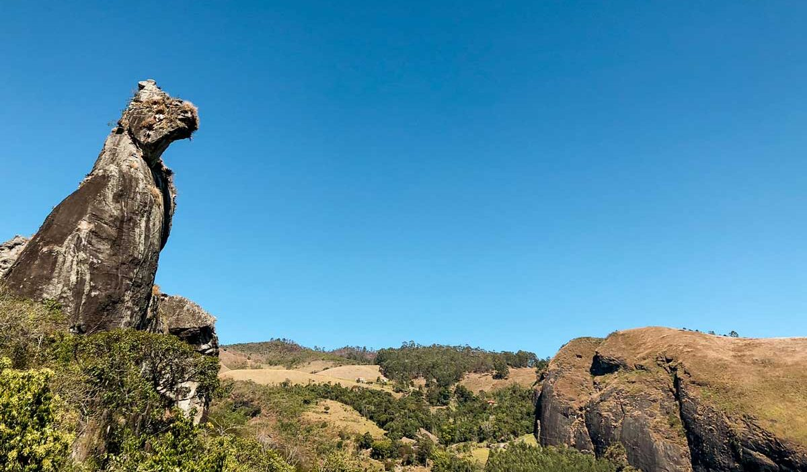
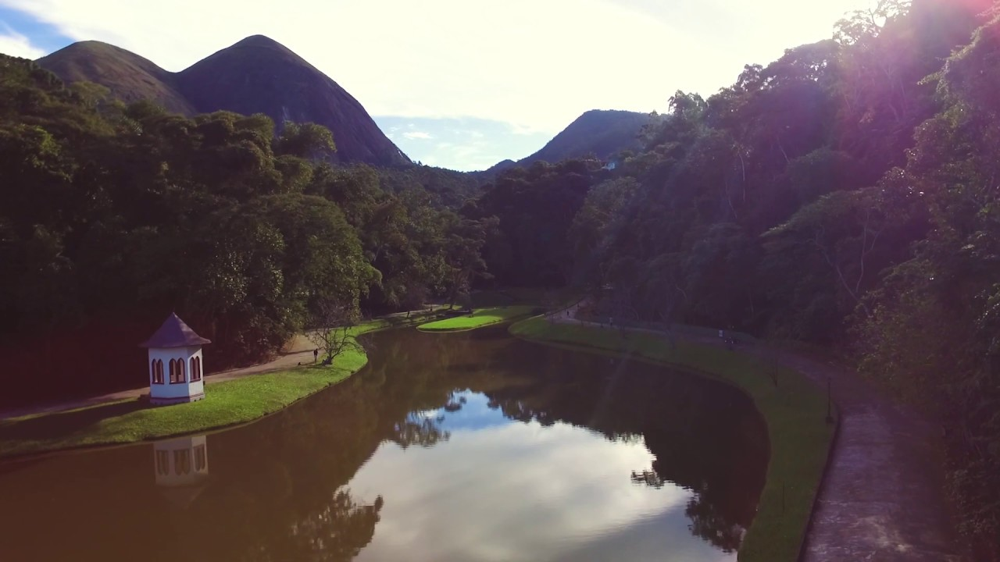

Fotos
 





Nova Friburgo é um município brasileiro do estado do Rio de Janeiro, Região Sudeste do país. Localiza-se no centro-norte do estado e é a cidade mais fria do Rio. Em 2017, foi oficialmente declarado que Nova Friburgo é a Suíça Brasileira.
Ver mais sobre
Nova Friburgo é um dos municípios que mais possui atrativos turísticos no estado. Considerada uma cidade de veraneio por famílias cariocas e da baixada fluminense, ainda mantém o ar bucólico de ser uma estação climática em meio ao verde de seus parques e praças. Alguns distritos do município, como Lumiar e São Pedro da Serra, têm paisagens naturais famosas. Nova Friburgo possui um das maiores redes hoteleiras do interior do estado do Rio de Janeiro
A Prefeitura disponibiliza informações sobre turismo e lazer no Centro de Turismo, que fica na Praça Dermeval Barbosa Moreira, no centro da cidade.
Ligue para informações



Ligue para central de turismo